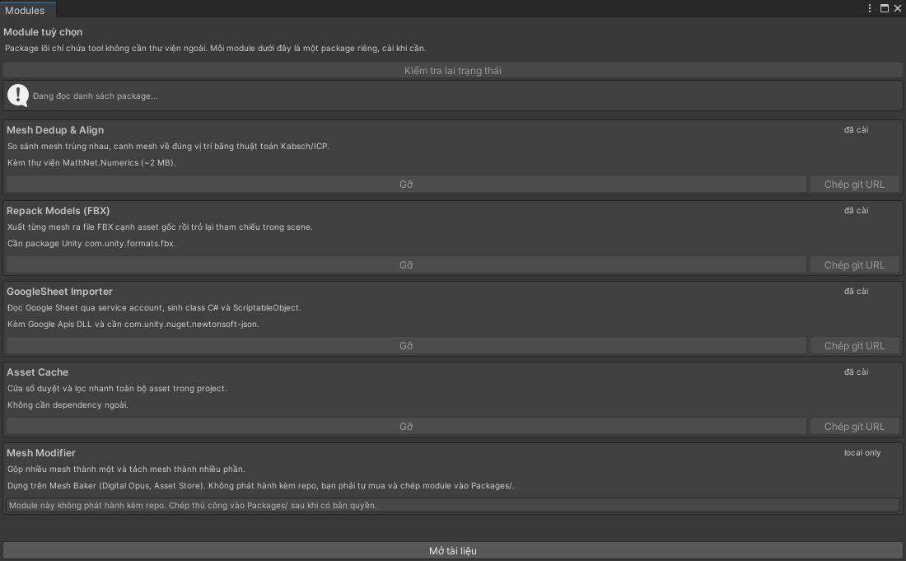

Mesh Dedup & Align
So sánh và gộp mesh trùng nhau, canh mesh về đúng vị trí bằng thuật toán Kabsch/ICP.
Kéo theo: Kèm thư viện MathNet.Numerics (~2 MB).
Tool trong module: Deduplicate Mesh Tool
Tool/Module
Package lõi chỉ chứa tool không cần thư viện ngoài. Mỗi module dưới đây là một package riêng, chỉ cài khi bạn thật sự cần nó.

Ảnh images/modules-window.png chưa chụp.
Nếu không muốn dùng cửa sổ Modules, dán git URL vào Package Manager theo cách thông thường.
| Module | Git URL |
|---|---|
| Mesh Dedup & Align | https://github.com/BingoBoiz/FeederEditorTools.git?path=/Packages/com.feeder.editortools.meshdedup |
| Repack Models (FBX) | https://github.com/BingoBoiz/FeederEditorTools.git?path=/Packages/com.feeder.editortools.repackfbx |
| GoogleSheet Importer | https://github.com/BingoBoiz/FeederEditorTools.git?path=/Packages/com.feeder.editortools.googlesheet |
| Asset Cache | https://github.com/BingoBoiz/FeederEditorTools.git?path=/Packages/com.feeder.editortools.assetcache |
| Mesh Modifier | không phát hành |
So sánh và gộp mesh trùng nhau, canh mesh về đúng vị trí bằng thuật toán Kabsch/ICP.
Kéo theo: Kèm thư viện MathNet.Numerics (~2 MB).
Tool trong module: Deduplicate Mesh Tool
Xuất từng mesh ra file FBX cạnh asset gốc rồi trỏ lại tham chiếu trong scene.
Kéo theo: Kéo theo package Unity com.unity.formats.fbx.
Tool trong module: Repack Models Tool
Đọc Google Sheet qua service account, sinh class C# và ScriptableObject từ dữ liệu sheet.
Kéo theo: Kèm Google Apis DLL, kéo theo com.unity.nuget.newtonsoft-json.
Tool trong module: GoogleSheet Importer (cửa sổ riêng)
Cửa sổ duyệt, lọc và tìm tham chiếu của mọi asset trong project.
Kéo theo: Không cần dependency ngoài.
Tool trong module: Asset Cache (cửa sổ riêng)
Gộp nhiều mesh thành một (atlas texture, remap UV) và tách một mesh thành nhiều phần.
Kéo theo: Dựng trên Mesh Baker (Digital Opus, Unity Asset Store). Không phát hành kèm repo vì là asset trả phí của bên thứ ba.
Tool trong module: Mesh Modifier (cửa sổ riêng)
Module này không nằm trong repo. Nó dựng trên một asset trả phí của bên thứ ba nên không thể phát hành kèm. Mua asset đó rồi chép thư mục module vào Packages/ của project.